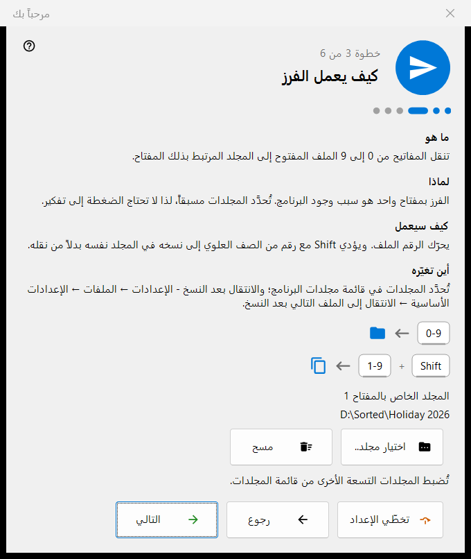
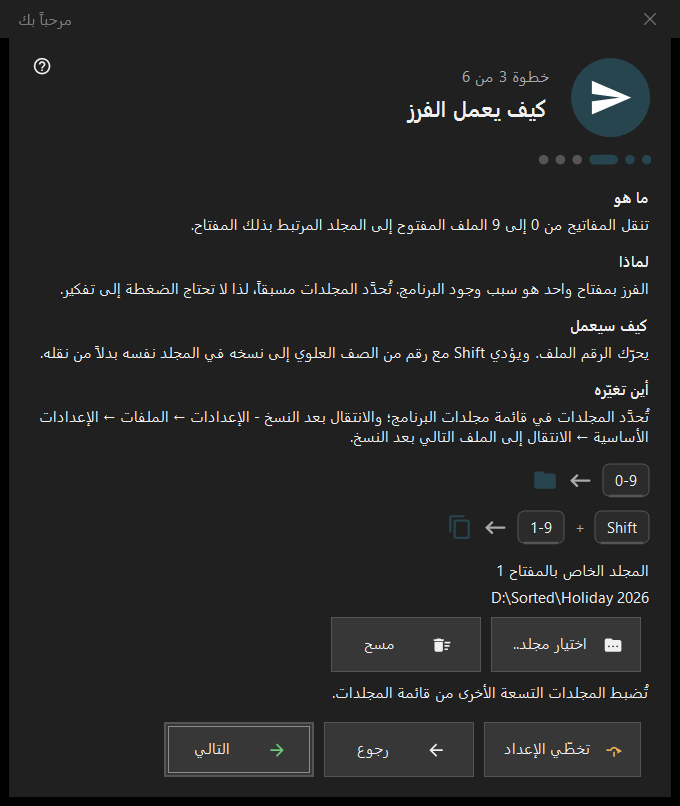

مرحباً بك
مرحباً بك
الغرض من هذه النافذة
تضبط خطوات الترحيب الأساسيات في دقائق قليلة: اللغة والمظهر ومجلد المفتاح 1 والحذف وارتباطات الملفات. وهي تُفتح عند التشغيل الأول، ومن الزر الإعداد الأولي في شاشة العرض الفارغة، ومن الخيار إظهار خطوات الترحيب مجدداً في صفحة عام من الإعدادات. وهي موجودة في الإصدار 64 بت فقط.


بهذا الترتيب
- اختر اللغة.
- اختر مخطط الخلفية وإجراء العجلة.
- اختر مجلد المفتاح 1.
- اقرأ كيف يعمل الحذف.
- اضبط ارتباطات الملفات.
- راجع الملخص واضغط إنهاء. الزر التالي ينتقل إلى الخطوة التالية، والزر رجوع يعود، والزر تخطّي الإعداد ينتقل إلى الخطوة الأخيرة.
عناصر النافذة
لغة الواجهة
تتغير لغة النافذة فورًا كمعاينة؛ ولا يعتمدها البرنامج إلا عند الضغط على التالي. وإغلاق النافذة دون ذلك يعيد لغة البرنامج السابقة.
المظهر
اختر مخطط خلفية منطقة الصورة (حسب الزاوية، أسود، أبيض، حسب الحافة، من الأعلى، من الأسفل) وإجراء العجلة: فإما أن تكبّر العجلة عند المؤشر وتتصفح مفاتيح الأسهم الملفات، وإما أن تتصفح العجلة الملفات ويكبّر Ctrl مع العجلة. ويمكن تغيير الاثنين لاحقًا في صفحة الصور من الإعدادات.
كيف يعمل الفرز
تنقل الأرقام 0-9 الملف الحالي إلى مجلد؛ وينسخه Shift مع رقم من الصف العلوي. يُختار مجلد المفتاح 1 بالزر اختيار مجلد..، وتُضبط المجلدات التسعة الأخرى لاحقًا في صفحة الوجهات من الإعدادات. ويُبلَّغ عن المجلد الذي اختفى بالرسالة: لم يعد هذا المجلد متاحاً. اختر مجلداً آخر.
حذف آمن
يوضّح كيف يعمل Del (إلى سلة المحذوفات) وShift+Del (نهائيًا). وخيارات الحذف في صفحة الملفات من الإعدادات.
افتح الصور هنا
تتيح لهذا البرنامج فتح الصور ومقاطع الفيديو من مستكشف الملفات. لا تظهر هذه الخطوة إلا إذا لم يكن البرنامج مثبّتًا كحزمة Microsoft Store؛ وهي تُطبَّق على حساب المستخدم الخاص بك ولا تحتاج إلى صلاحيات المسؤول.
كل شيء جاهز
يسرد الملخص كل إعداد وقيمته والمكان الذي يمكن تغييره منه. إذا كانت مكوّنات الخوادم مثبّتة على هذا الكمبيوتر، تعرض الكتلة الخوادم على هذا الكمبيوتر كل مكوّن مع حالته والزر فتح المدير؛ وإذا لم يكن أي منها مثبّتًا فإن الكتلة تكون مخفية.
أجزاء الخطوة
لكل خطوة أربعة أجزاء: ما هو، لماذا، كيف سيعمل، أين تغيّره.